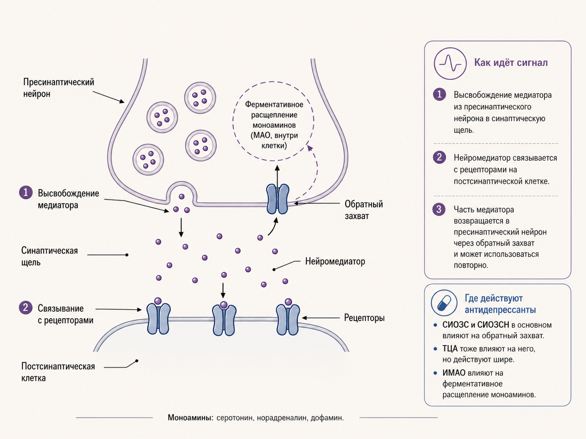

Антидепрессанты: что это за класс препаратов и как они работают
Обзорный справочник о том, какие бывают антидепрессанты, как они предположительно работают в нервной системе, почему применяются шире депрессии и где их эффект ограничен или неоднороден.
Один и тот же препарат могут назначить при депрессии, мигрени, хронической боли и синдроме раздражённого кишечника. На первый взгляд это выглядит странно: как лекарство «от депрессии» оказалось в кабинете невролога или гастроэнтеролога?
Но это не путаница и не маркетинг. Тот же амитриптилин применяют при , профилактике мигрени и синдроме раздражённого кишечника. Молекула одна; дозы, цели назначения и предполагаемые механизмы разные.
Нейропатическая боль — боль, связанная с повреждением или нарушенной работой нервной системы. Она может ощущаться как жжение, прострелы, покалывание или болезненная чувствительность, даже когда ткани уже не повреждаются напрямую.
Главная мысль
«Антидепрессант» — это исторически сложившееся клиническое название, а не описание механизма.
Оно говорит о важном применении препарата, но не описывает ни его химию, ни всё, что молекула делает в нервной системе.
Дальше — обзорный справочник: какие бывают антидепрессанты, чем они отличаются, как предположительно работают в мозге и теле, почему применяются шире депрессии и где их эффект ограничен, неоднороден или переоценивался. Без диагностики и индивидуальных рекомендаций. В тексте учтены данные, доступные на май 2026 года.
2. Что такое антидепрессанты как класс
Химически антидепрессанты — это не один класс, а несколько разнородных групп: у них разная структура, разные мишени в нервной системе, разные истории появления. Многие из них возникли в разное время и нередко попадали в психиатрию случайно.
Объединяет их не общая химия, а общая : у каждого из этих препаратов когда-то заметили способность снижать депрессивные симптомы, а потом это проверили и подтвердили в исследованиях. Это упрощённая карта. На практике классификаций больше: по химической структуре, поколению, механизму действия и . Но если идти от того, что чаще встречается в назначениях, получится несколько больших групп. В центре этого текста — СИОЗС, СИОЗСН и ТЦА; остальные группы нужны для контекста.
Клиническая ниша — область медицинского применения: при каких состояниях препарат показал пользу, где его назначают и какие симптомы он должен уменьшать. Это не то же самое, что химический класс или точный механизм действия.
Рецепторный профиль — набор мишеней, с которыми взаимодействует препарат: рецепторов, транспортёров, ферментов и других белков. По нему можно понять, почему препараты одного «назначенческого» класса могут давать разные эффекты и побочные реакции.
Карта класса: одно название, разные группы
Здесь не химическая классификация целиком, а рабочая карта для чтения статьи.
СИОЗССеротониновый транспортёр; часто первая линия при депрессии и тревожных расстройствах.
СИОЗСНСеротонин + норадреналин; часть препаратов используется также при боли.
ТЦАСтарый менее избирательный класс: больше мишеней, больше побочных эффектов.
ИМАОВлияют на ферментативное разрушение моноаминов; сложнее по взаимодействиям.
АтипичныеСборная группа: разные механизмы, разные клинические профили.
Быстрые линииЭскетамин и Auvelity меняют разговор о скорости антидепрессивного эффекта.
СИОЗС
СИОЗС — селективные ингибиторы обратного захвата серотонина, англ. SSRI. Это один из самых частых вариантов фармакотерапии при депрессии, тревожных расстройствах, обсессивно-компульсивном расстройстве и посттравматическом стрессовом расстройстве. Сюда относятся флуоксетин (Прозак), сертралин (Золофт), эсциталопрам (Ципралекс), пароксетин (Паксил), циталопрам (Ципрамил), флувоксамин (Феварин).
Первая линия — варианты лечения, которые обычно рекомендуют рассматривать в начале при типичной клинической ситуации. Это не значит «лучшее для каждого человека» и не отменяет индивидуального подбора.
Работают они через серотониновый транспортёр. Это белок, который обычно быстро убирает серотонин из пространства между нейронами обратно в клетку. СИОЗС блокируют этот «обратный сбор», поэтому серотонин дольше остаётся доступным между клетками и дольше участвует в передаче сигнала. Это первый фармакологический шаг, а не вся история: клинический эффект связан с более медленными перестройками нервной системы, о которых речь дальше.
Важно: это не значит, что препарат просто «добавляет счастья». Серотонин — не молекула радости, а часть большой регуляторной системы, связанной с настроением, тревогой, сном, аппетитом, болью, сексуальной функцией и работой кишечника. Широкое распространение СИОЗС началось с конца 1980-х. Их главное преимущество перед более старыми классами — обычно лучшая переносимость и безопасность при передозировке, а не обязательно большая эффективность.
СИОЗСН
СИОЗСН — селективные ингибиторы обратного захвата серотонина и норадреналина, англ. SNRI. Они похожи на СИОЗС, но работают сразу с двумя системами: серотониновой и норадреналиновой. Норадреналин тоже не «одна функция», а система регуляции бодрствования, внимания, реакции на стресс и боль, поэтому у СИОЗСН немного другой профиль действия и побочных эффектов. К этой группе относятся венлафаксин (Велаксин, Эфевелон), дулоксетин (Симбалта), десвенлафаксин (Пристик), левомилнаципран.
Дулоксетин официально одобрен не только при депрессии и тревоге, но и при болезненной диабетической нейропатии и фибромиалгии. Почему один и тот же препарат может работать в таких разных ситуациях, разберём в блоке про спектр действия.
ТЦА
ТЦА — трициклические антидепрессанты, англ. TCA. Это один из самых старых классов: имипрамин был открыт в 1957 году. Сюда относятся амитриптилин (Триптизол, Саротен), нортриптилин, кломипрамин (Анафранил), дезипрамин, имипрамин (Мелипрамин). У кломипрамина особое место в лечении ОКР: он официально одобрен при этом расстройстве, но из-за побочных эффектов сегодня обычно не является первой линией.
ТЦА менее избирательны, чем СИОЗС и СИОЗСН. Они тоже влияют на обратный захват серотонина и норадреналина, но параллельно затрагивают другие рецепторные системы — связанные с бодрствованием, давлением, работой кишечника, мочевого пузыря, слюнных желёз и сердца. Отсюда и побочные эффекты: сухость во рту, запоры, сонливость, головокружение при вставании из-за снижения давления, влияние на сердечную проводимость. Из-за этого ТЦА сегодня редко назначают первой линией при депрессии и особенно осторожны с ними при риске передозировки.
Зато они по-прежнему активно используются в других областях: при хронической и нейропатической боли, для профилактики мигрени, при синдроме раздражённого кишечника. Там часто нужны другие дозы и другая клиническая логика.
ИМАО
ИМАО — ингибиторы моноаминоксидазы, англ. MAOI. Это ещё один старый класс наряду с ТЦА. К нему относятся фенелзин, транилципромин, моклобемид, селегилин в виде пластыря. Моноаминоксидаза — это фермент, который помогает клетке разрушать : серотонин, норадреналин и дофамин. ИМАО блокируют этот фермент, поэтому медиаторы медленнее «утилизируются», а их доступность меняется.
Моноамины — группа сигнальных веществ нервной системы. В контексте антидепрессантов чаще всего говорят о серотонине, норадреналине и дофамине.
ИМАО могут быть эффективны, особенно при так называемой и устойчивых случаях. Но у них сложнее профиль безопасности и больше лекарственных взаимодействий. Особенно строгие пищевые ограничения касаются классических необратимых ИМАО — фенелзина и транилципромина: продукты с высоким содержанием тирамина могут в сочетании с ними вызвать опасный скачок давления. У моклобемида, обратимого ингибитора MAO-A, взаимодействия с пищей обычно мягче. Поэтому сегодня ИМАО почти не используют как первую линию.
Атипичная депрессия — клинический подтип депрессивного эпизода, для которого обычно описывают реактивность настроения, повышенную сонливость, усиление аппетита или веса, ощущение тяжести в конечностях и чувствительность к межличностному отвержению. Набор критериев может немного различаться между классификациями и исследованиями.
Атипичные антидепрессанты
Атипичные антидепрессанты — это сборная категория для препаратов, которые не помещаются в первые четыре группы. Сюда относятся бупропион (Велбутрин), миртазапин (Ремерон), тразодон, агомелатин (Вальдоксан), вортиоксетин (Бринтелликс), вилазодон.
У них разные механизмы и клинические профили. Бупропион действует преимущественно через дофамин и норадреналин, а не через серотонин, и используется также в программах отказа от курения. Миртазапин часто даёт и повышает аппетит, поэтому может быть полезен, когда депрессия сочетается с бессонницей и потерей веса. Тразодон назначают на ночь из-за седативного действия. Агомелатин связан с мелатониновой системой. Вортиоксетин и вилазодон работают с серотониновой системой сложнее, чем классические СИОЗС.
Седативное действие — способность препарата снижать возбуждение и вызывать сонливость. Иногда это используют как желательный эффект при бессоннице, но в другой ситуации такая сонливость может быть побочным эффектом.
Общее у них одно: они не укладываются в простую схему «ингибитор обратного захвата» или «ингибитор фермента».
Отдельная новая линия: препараты с быстрым началом действия
Это не единый химический класс, а новая клиническая линия, важная из-за скорости и других механизмов. С 2019 года в США одобрен интраназальный эскетамин — Spravato: сначала для терапевтически резистентной депрессии, позже — также для депрессивных симптомов у пациентов с большим депрессивным расстройством и , вместе с пероральным антидепрессантом. Важно: эффективность именно в предотвращении суицида или снижении суицидальных мыслей формально не доказана. С 2022 года одобрена пероральная комбинация декстрометорфана и бупропиона — Auvelity — для большого депрессивного расстройства.
Суицидальная идеация — клинический термин для суицидальных мыслей, намерений или планов. Слово «острая» указывает на актуальное состояние, требующее срочной профессиональной оценки.
Их особенность — нетипичная для антидепрессантов скорость: у эскетамина эффект у части пациентов может быть заметен в первые сутки; у Auvelity — в первую неделю, а не через несколько недель, как у классических препаратов. Механизмы у них тоже другие. Эскетамин связан прежде всего с и — одной из главных систем возбуждения в мозге. У Auvelity механизм комбинированный: декстрометорфан влияет на NMDA-рецепторы, а бупропион добавляет норадреналин-дофаминовый компонент и меняет метаболизм декстрометорфана.
NMDA-рецепторы — один из типов рецепторов к глутамату. Они участвуют в возбуждающей передаче сигналов и в процессах нейропластичности, поэтому важны для обсуждения быстрых антидепрессивных эффектов.
Глутаматная система — главная возбуждающая сигнальная система мозга. Она связана не с «хорошим настроением» напрямую, а с передачей сигналов, обучением, пластичностью и перестройкой нейронных сетей.
В России и многих странах эти препараты пока недоступны или применяются только в специализированных условиях; статус доступности лучше уточнять на момент чтения. Но они уже меняют сам разговор о том, как антидепрессант может работать и как быстро может появляться эффект.
Главная мысль
Антидепрессанты сильно отличаются друг от друга — по механизму, скорости, побочным эффектам и тому, кому они подходят. Когда говорят «антидепрессанты влияют на то-то», обычно имеют в виду усреднённую картину по нескольким очень разным препаратам. Это почти всегда слишком грубо.
К концу текста мы вернёмся к тому, почему в литературе всё чаще предлагают описывать эти препараты точнее, чем одним словом «антидепрессанты».
3. Историческая рамка
История антидепрессантов начинается там, где её никто не искал: в санаториях начала 1950-х, где испытывали новый класс препаратов — противотуберкулёзные гидразиды. Один из них, ипрониазид, лечил туберкулёз умеренно, но пациенты, годами лежавшие в апатии и истощении, на этом препарате заметно оживали — набирали вес, начинали общаться.
Туберкулёз — инфекционное заболевание, которое чаще всего поражает лёгкие. В середине XX века его часто лечили длительно, в санаториях, поэтому именно там врачи могли замечать неожиданные эффекты новых препаратов.
Газеты тех лет писали, что больные «танцуют в коридорах» — образ, перешедший потом в исторические пересказы. Психиатр Натан Клайн (Nathan Kline) и несколько других врачей перенесли наблюдение из санаториев в психиатрию: в 1957 году Клайн сообщил о применении ипрониазида при тяжёлой депрессии — препарата, который «трогал не только лёгкие». К концу 1950-х ипрониазид прочно вошёл в психиатрию как первый антидепрессант из класса ИМАО.
Параллельная история — в Швейцарии. В клинике Münsterlingen психиатр Роланд Кун (Roland Kuhn) пробовал на пациентах вещество от компании Geigy — фармацевты надеялись получить новый антипсихотик. На шизофрении препарат не работал; но Кун заметил, что у пациентов с депрессией настроение постепенно выравнивалось. Молекула называлась имипрамин. В 1957 году Кун впервые сообщил об антидепрессивном эффекте имипрамина; англоязычная статья в American Journal of Psychiatry вышла в 1958-м. Имипрамин стал первым трициклическим антидепрессантом. Следующие десятилетия он оставался «золотым стандартом» от депрессии — несмотря на побочные эффекты и риски при передозировке, из-за которых сегодня препарат с таким набором эффектов вряд ли получил бы статус первой линии.
Препараты работали, но никто точно не понимал как. Объяснения появлялись постепенно. В 1965 году американский психиатр Джозеф Шилдкраут (Joseph Schildkraut) собрал известные факты в одну гипотезу. С одной стороны, ипрониазид и имипрамин повышают доступность катехоламинов (норадреналина и его родственников). С другой — резерпин, лекарство от гипертонии, истощающее эти моноамины, у части пациентов провоцировал депрессивные эпизоды.
Из этих наблюдений Шилдкраут сформулировал осторожную гипотезу: некоторые, а возможно и все депрессии связаны со снижением катехоламинов (прежде всего норадреналина) — либо абсолютным, либо относительным. Через два года британский психиатр Алек Коппен (Alec Coppen) обратил внимание на серотонин: в обзоре биохимии он подробно обосновал, что в депрессии вовлечена и катехоламиновая, и серотониновая система — а серотонин, возможно, центральнее.
Аффективные расстройства — группа состояний, в которых центрально нарушается настроение: например, депрессивные и биполярные расстройства. Термин чаще встречается в профессиональной литературе.
Так сложилась моноаминовая гипотеза депрессии — не одна теория, а семейство идей: в депрессии нарушены моноаминовые системы передачи — прежде всего норадреналина, серотонина и дофамина.
В 1987 году регулятор FDA одобрил флуоксетин (Прозак). Это был не первый в мире селективный ингибитор обратного захвата серотонина — в Европе раньше появлялся зимелидин, но его сняли с рынка по соображениям безопасности. Зато флуоксетин стал первым культурным и коммерческим символом нового поколения антидепрессантов и флагманом класса СИОЗС.
Переносимость оказалась настолько лучше, чем у трицикликов, что в следующие два десятилетия СИОЗС стали одним из самых частых назначений в развитых странах. Вместе с эпохой СИОЗС широко разошлась популярная формула «химического дисбаланса»: депрессия якобы возникает из-за нехватки серотонина, а препарат эту нехватку исправляет. Удобная для маркетинга и для объяснений пациенту — но заметно проще, чем научная моноаминовая гипотеза, и тем более чем сегодняшние данные.
Психотропные препараты — лекарства, которые влияют на психические функции через нервную систему: настроение, тревогу, сон, мышление, возбуждение, восприятие. Это широкий зонтик, а не один класс препаратов.
Линия времени: эффект шёл впереди объяснения
1950-е
ИпрониазидПрепарат из туберкулёзных санаториев стал первым антидепрессантом из класса ИМАО.
1957–1958
ИмипраминПредполагаемый антипсихотик оказался первым трициклическим антидепрессантом.
1965–1967
Моноаминовая гипотезаШилдкраут и Коппен предложили объяснять эффект через катехоламины и серотонин.
1987
ФлуоксетинПрозак стал культурным и коммерческим символом нового поколения СИОЗС.
Главная рамка
Общая рамка всей этой истории — двойственная. Ранние открытия действительно были случайными: препарат для туберкулёза оказался психоактивным; предполагаемый антипсихотик стал антидепрессантом; теории механизма писались задним числом, чтобы объяснить уже наблюдаемый клинический эффект. Но дальше работала уже не только случайность: флуоксетин был результатом целенаправленного поиска селективного ингибитора обратного захвата серотонина. В этой области клинический эффект обычно опережал его объяснение. Отсюда поправка для дальнейшего чтения: за каждым «современным объяснением» стоит десятилетие наблюдений, а не наоборот. И, как мы увидим в блоке 5, исчерпывающего ответа на «как именно» наука пока не даёт.
4. База нейрохимии — где это всё происходит
Чтобы понять, куда антидепрессанты вмешиваются, нужна короткая карта места действия.
Нервная система состоит из клеток-нейронов, которые передают друг другу сигналы. Внутри нейрона сигнал идёт электрически — как изменение напряжения на мембране. А вот между нейронами во многих синапсах он передаётся химически.
Даже если две клетки связаны, они обычно не срастаются в один провод: между окончанием одного нейрона и мембраной другой клетки остаётся микроскопическая синаптическая щель размером около 20–40 нанометров. Первый нейрон выбрасывает в неё молекулы вещества-передатчика — , второй считывает их специальными белками-рецепторами.
Нейромедиатор — сигнальное вещество, с помощью которого нервные клетки передают сообщения друг другу или другим клеткам. Серотонин, норадреналин, дофамин и глутамат — примеры нейромедиаторов.
Рецептор не просто «ловит» молекулу. Связывание нейромедиатора с рецептором меняет состояние клетки: следующий нейрон может стать более готовым к разряду или менее готовым — а может запустить более медленные внутриклеточные процессы. А когда таких маленьких изменений много, меняется работа целых нейронных сетей.
Чтобы передача оставалась передачей, а не постоянным фоном, медиатор после работы нужно из синаптической щели убирать. Часть молекул возвращается в клетку через специальные белки-транспортёры, часть разрушается ферментами, часть рассеивается и захватывается соседними клетками, включая . Возврат через транспортёр называют обратным захватом (англ. reuptake).
Глия — клетки нервной системы, которые сами не нейроны, но поддерживают их работу: помогают с питанием, защитой, изоляцией волокон и регулированием химической среды вокруг синапсов.
Синапс: где появляется точка приложения
Упрощённая карта: выброс медиатора, связывание с рецепторами, обратный захват и ферментативное расщепление.

Многие классические и часто назначаемые антидепрессанты вмешиваются именно в обратный захват моноаминов; ИМАО — в их ферментативное расщепление. Но не все антидепрессанты сводятся к этим двум механизмам: у миртазапина, тразодона, агомелатина, вортиоксетина, эскетамина и других препаратов есть важные рецепторные, и другие механизмы.
Глутаматергические механизмы — процессы, связанные с глутаматом, главным возбуждающим нейромедиатором мозга. Они важны для передачи сигнала, обучения и нейропластичности.
Исторически большинство классических антидепрессантов нацелены на моноаминовые системы. В них входят серотонин (англ. 5-HT), норадреналин (англ. NE) и дофамин (англ. DA). Но это не вся карта: современные объяснения включают и глутаматергическую передачу, и мелатониновые рецепторы, и нейропластичность, и стресс-регуляцию. Просто для понимания СИОЗС, СИОЗСН, ТЦА и ИМАО моноамины остаются главным входом.
Серотонин, норадреналин и дофамин — не «молекулы настроения», «молекулы стресса» и «молекулы удовольствия». Каждый из них — не отдельная кнопка, а часть большой системы: нейронов, их проекций, рецепторов, транспортёров и ферментов. В разных участках мозга и тела такие системы делают разные вещи. Серотониновые сигналы участвуют в регуляции настроения, тревоги, сна, аппетита, болевого порога, кишечной моторики; норадреналиновые — в бодрствовании, концентрации, ответе на стресс; дофаминовые — в мотивации, вознаграждении, движениях. Поэтому одна и та же молекула может влиять не на «одно настроение», а сразу на несколько систем тела — включая такие, как сексуальная функция и желудочно-кишечный тракт.
Переход к механизму
Дальше — самое интересное. Первые фармакологические изменения могут начаться уже после первых доз: например, СИОЗС довольно быстро блокируют серотониновый транспортёр и меняют доступность серотонина для рецепторов. А пациент часто чувствует заметный эффект не через час и не через день, а намного позже. О том, почему так, — следующий блок.
5. Механизмы — быстро и медленно
В блоке 4 мы остановились на парадоксе. Первые фармакологические действия могут начаться быстро: СИОЗС и СИОЗСН за часы меняют доступность серотонина или норадреналина для рецепторов. А клинический эффект — то, что пациент чувствует как «становится лучше», — обычно оценивают через 2–4 недели; полноценный ответ может занимать 4–6 недель и больше.
При этом у части пациентов первые статистически различимые улучшения на СИОЗС могут появляться уже к концу первой недели, а раннее улучшение в первые две недели повышает вероятность дальнейшего ответа, но не гарантирует его. Если препарат «исправляет дефицит», почему эффект всё равно разворачивается постепенно?
Этот зазор — одна из главных проблем для упрощённой версии моноаминовой гипотезы, где депрессию представляют как простой дефицит медиатора, а препарат — как его немедленное восполнение. Но он же стал источником нескольких более интересных объяснений. Ни одно из них пока не закрыто как доказанный механизм клинического эффекта. Скорее всего, реальная картина — это сочетание нескольких процессов разной скорости.
Первое объяснение — про внутренний «тормоз» серотониновой системы
Обычно мы представляем передачу сигнала так: один нейрон выбросил серотонин, следующий нейрон его «считал». Но у серотониновой системы есть ещё и обратная связь. Часть рецепторов работает не как приёмник для следующего нейрона, а как датчик на самом серотониновом нейроне: не стало ли серотонина вокруг слишком много?
Когда СИОЗС блокирует обратный захват, серотонин дольше остаётся доступным между клетками. Система замечает это и может временно включить тормоз: «серотонина уже много, выбрасываем меньше». Поэтому в первые недели всё не так просто, как «препарат повысил серотонин — человеку сразу стало лучше».
Постепенно этот тормоз может ослабевать. Рецепторы обратной связи становятся менее чувствительными к избытку медиатора, и серотониновая система может активнее передавать сигнал дальше — в том числе в зоны мозга, связанные с эмоциями, памятью и регуляцией стресса. В научном языке это называют десенситизацией ауторецепторов. В этой модели чаще всего обсуждают 5-HT1A-ауторецепторы в . Это старая и влиятельная модель задержки эффекта СИОЗС: она помогает понять, почему первые фармакологические изменения начинаются быстро, а клинический эффект может разворачиваться неделями. Но это не универсальное объяснение действия всех антидепрессантов.
Ядра шва — группы нейронов в стволе мозга. Многие серотониновые нейроны начинаются именно там и посылают проекции в разные зоны мозга, поэтому этот участок важен для обсуждения серотониновой системы.
Второе объяснение — про нейропластичность
Нейропластичность — это способность мозга менять свои связи: усиливать одни, ослаблять другие, перестраиваться под влиянием опыта, стресса, обучения, сна, психотерапии и лекарств. В этой модели антидепрессанты важны не потому, что просто «поднимают уровень серотонина», а потому что при длительном воздействии могут запускать более медленные . Проще говоря: быстрые изменения происходят на уровне сигнала, а медленные — на уровне настройки сети. Меняется сила связей между нейронами, поддерживается рост и выживание нейрональных отростков, могут перестраиваться сети, связанные со стрессом, памятью и регуляцией эмоций.
Клеточные процессы — изменения внутри клетки: работа рецепторов и ферментов, включение или выключение генов, синтез белков, рост и ослабление контактов между клетками. Такие процессы обычно разворачиваются медленнее, чем простая передача сигнала.
Главный кандидат здесь — BDNF, нейротрофический фактор мозга (brain-derived neurotrophic factor). Его часто описывают как один из белков, которые помогают нейронам выживать, поддерживать связи и легче перестраиваться.
В мета-анализах у пациентов с депрессией часто находят более низкие периферические уровни BDNF (то есть в крови), а после лечения — их повышение. Но это не доказывает, что низкий BDNF — причина депрессии или что повышение BDNF само по себе объясняет клиническое улучшение. Небольшие исследования тканей мозга после смерти тоже намекают на снижение BDNF — прежде всего в и префронтальной коре.
Гиппокамп — структура мозга, важная для памяти, обучения и реакции на стресс. В исследованиях депрессии его часто обсуждают вместе с нейропластичностью и работой стресс-систем.
В экспериментах на животных эта линия выглядит довольно убедительно. У людей данные менее однородны: BDNF, который измеряют в крови, — слабый индикатор того, что происходит в самом мозге; ; и часть эффекта плацебо тоже может сопровождаться изменениями нейропластичности. Поэтому фраза «антидепрессанты работают через нейропластичность» — это многообещающая гипотеза, а не полный и окончательно доказанный механизм клинического эффекта у людей.
Депрессия гетерогенна — значит, что под одним диагнозом могут быть разные сочетания симптомов, причин, биологических процессов и жизненных обстоятельств. Поэтому один механизм редко объясняет все случаи депрессии.
Третье объяснение — про оптику
В когнитивно-нейропсихологической модели Кэтрин Хармер (Catherine Harmer) антидепрессанты могут рано менять обработку эмоциональной информации: уменьшать негативное смещение восприятия и усиливать обработку позитивных стимулов. Это может происходить раньше субъективного улучшения настроения. В экспериментальных задачах люди могут реже считывать лица как враждебные; неоднозначные ситуации интерпретировать менее негативно; лучше запоминать позитивные слова. Изменилось не настроение само по себе — изменился «фильтр», через который мозг обрабатывает мир. По этой гипотезе клинический эффект через несколько недель — это накопленное последствие того, что человек неделями встречает новый день через чуть менее тёмные очки.
И свежее наблюдение, к которому стоит относиться осторожно
В 2021 году группа Эеро Кастрена (Eero Castrén) в Финляндии показала в доклинических моделях, что разные антидепрессанты — СИОЗС, трициклики и даже — могут напрямую связываться с рецептором TrkB. TrkB — рецептор, через который BDNF передаёт сигнал. Если совсем просто: BDNF помогает нейронным связям перестраиваться, а TrkB — один из главных «приёмников» этого сигнала. По этой гипотезе антидепрессанты могут не просто менять уровни серотонина или норадреналина, а ещё и облегчать BDNF-зависимую пластичность — делать систему перестройки связей более готовой к работе.
Кетамин — препарат, изначально применявшийся как анестетик. В психиатрии его изучают из-за быстрых антидепрессивных эффектов в контролируемых медицинских условиях; он связан прежде всего с глутаматной системой и NMDA-рецепторами.
Это могло бы объяснить, почему столь разные по химии препараты могут сходиться в общем результате — влиянии на пластичность нервных сетей. Гипотеза элегантная и потенциально мощная, но пока её нельзя подавать как установленный клинический механизм действия антидепрессантов у людей.
Главная рамка
Антидепрессант делает с мозгом несколько вещей одновременно, на разных скоростях. Что-то меняется в часы или дни: концентрации медиаторов, ранние сдвиги в обработке эмоциональной информации. Что-то — в недели: десенситизация ауторецепторов, изменения BDNF-сигналинга, перестройка сетей. Какая из этих линий главная для клинического эффекта — у исследователей пока нет единого ответа. Поэтому фраза «антидепрессанты работают так-то» в строгом смысле сейчас некорректна: ни одна из гипотез не отвечает на вопрос «как именно» полностью. Это пригодится в блоке про спорные зоны.
6. Спектр действия
Если читать инструкции к разным СИОЗС, быстро выясняется странная на первый взгляд вещь: один и тот же препарат может иметь несколько психиатрических показаний. Например, сертралин одобрен при депрессии, ОКР, паническом расстройстве, ПТСР, социальной тревоге и предменструальном дисфорическом расстройстве. Флуоксетин — при депрессии, ОКР, булимии и паническом расстройстве; отдельные формы флуоксетина используются и при предменструальном дисфорическом расстройстве. Набор показаний зависит от конкретной молекулы и страны регистрации.
И это не ограничивается психиатрией. Дулоксетин, помимо депрессии, официально одобрен при болезненной диабетической нейропатии и фибромиалгии. Амитриптилин активно используют для профилактики мигрени и при хронической боли. Низкие дозы трициклических антидепрессантов, например амитриптилина, рекомендуются при синдроме раздражённого кишечника (СРК).
Здесь снова помогает различение из блоков 4–5: антидепрессант называют антидепрессантом по историческому и клиническому показанию, но молекула не знает диагноза. Для большинства классических антидепрессантов основная точка входа — системы серотонина, норадреналина и дофамина. Но общий принцип шире: это препараты, которые меняют работу нейромедиаторных и регуляторных сетей, а не «точечно чинят депрессию». Эти сети участвуют не только в настроении, но и в тревоге, боли, сне, аппетите, сексуальной функции и работе кишечника. Конкретнее по группам.
Тревожные расстройства, ОКР, ПТСР
Самая очевидная зона пересечения — тревожные расстройства, обсессивно-компульсивное расстройство и посттравматическое стрессовое расстройство. При них часть СИОЗС и СИОЗСН имеет хорошую доказательную базу и часто используется как первая линия фармакотерапии. Но «первая линия фармакотерапии» не означает «первое и главное лечение всегда таблетка». При ОКР и ПТСР психотерапевтические подходы с хорошей доказательной базой часто стоят рядом или впереди медикаментов.
При ОКР ответ на СИОЗС обычно оценивают позже, чем при депрессии, — примерно через 8–12 недель, а дозы нередко доходят до верхней части терапевтического диапазона. При ПТСР медикаменты могут снижать симптомы, но во многих руководствах предпочтительный старт — , если она доступна и человек готов к такой работе. Из препаратов наиболее устойчиво фигурируют сертралин, пароксетин и венлафаксин; официально для ПТСР в США одобрены сертралин и пароксетин.
Травмофокусированная психотерапия — подходы, которые прямо работают с травматическим опытом, его воспоминаниями, избеганием и связанными убеждениями. При ПТСР такие методы часто имеют более сильную доказательную базу, чем неспецифическая поддерживающая терапия.
Хроническая боль и фибромиалгия
При некоторых болевых состояниях антидепрессанты используют не потому, что боль «на самом деле от депрессии», а потому что серотонин и норадреналин участвуют в системах контроля боли. Эти системы могут усиливать или приглушать болевой сигнал на уровне спинного и головного мозга. Например, при болезненной диабетической нейропатии дулоксетин 60 мг/сут имеет доказательства умеренного качества. В исследованиях выраженным облегчением часто считают снижение боли на 50% и больше. По сравнению с плацебо такой результат получает примерно один дополнительный человек на каждые пять пациентов, принимающих препарат.
При нейропатической боли амитриптилин и другие трициклические антидепрессанты остаются препаратами первой линии в ряде рекомендаций. При фибромиалгии картина осторожнее: в рекомендациях физические упражнения — единственное вмешательство, рекомендованное настойчиво. Лекарства, включая амитриптилин и дулоксетин, рассматриваются слабее: как симптоматические опции, которые могут подбираться индивидуально. То есть «один и тот же препарат» — но не обязательно «через тот же механизм». При боли важную роль отводят , где участвуют серотонин и норадреналин. У ТЦА могут добавляться и другие эффекты — например седативное действие и влияние на разные рецепторные системы, что одновременно и помогает симптомам, и ухудшает переносимость.
EULAR — Европейский альянс ассоциаций ревматологов. Эта организация выпускает рекомендации по ревматологическим заболеваниям и связанным состояниям, включая фибромиалгию.
Нисходящие системы контроля боли — нервные пути, по которым мозг может усиливать или ослаблять болевой сигнал, идущий от тела. В этих системах участвуют серотонин и норадреналин, поэтому часть антидепрессантов применяют при некоторых болевых состояниях.
Синдром раздражённого кишечника
Для СРК эта логика проверялась и в крупном клиническом исследовании. В 2023 году в Lancet вышло исследование ATLANTIS: низкодозный амитриптилин — 10–30 мг, с постепенным подбором дозы по симптомам и переносимости — у пациентов с СРК в первичном звене оказался эффективнее плацебо как вторая линия после стандартных подходов. Американская коллегия гастроэнтерологов в руководстве 2021 года относит ТЦА при СРК к сильным рекомендациям.
Тут тоже — другие дозы, другие предполагаемые мишени. Кишечник имеет собственную нервную систему, а большая часть серотонина организма производится именно в желудочно-кишечном тракте, прежде всего специальными клетками слизистой кишечника — . Поэтому препараты, влияющие на серотониновую и норадренергическую передачу, могут затрагивать не только настроение, но и висцеральную чувствительность, боль и моторику.
Энтерохромаффинные клетки — клетки слизистой кишечника, которые производят и выделяют серотонин. Этот серотонин участвует в работе кишечника, включая моторику и чувствительность, а не просто связан с настроением.
Мигрень
В профилактике мигрени амитриптилин давно используется; в рекомендациях Американской академии неврологии и Американского общества головной боли 2012 года он отнесён к препаратам с вероятной эффективностью. Среди антидепрессантов для профилактики мигрени также обсуждается венлафаксин. Но это не значит, что антидепрессанты — универсальный первый выбор при мигрени. Снова — часто другие дозы и другая логика применения.
Главный вывод
Антидепрессанты — это препараты с системными нейробиологическими эффектами. Они могут менять работу сетей, участвующих в настроении, тревоге, боли, сне, аппетите и висцеральной чувствительности. Поэтому один и тот же препарат может иметь разные клинические применения, но дозы, длительность, ожидаемый эффект и предполагаемые механизмы при этом разные. Фраза «помогает при боли через тот же механизм, что и при депрессии» некорректна — даже если препарат один и тот же.
7. Почему одной попытки часто недостаточно
Если бы антидепрессанты быстро и надёжно выводили всех пациентов в ремиссию, тема была бы закрыта ещё в XX веке. Но депрессия гетерогенна, а ответ на лечение сильно различается: кому-то становится легче за несколько недель, кому-то нужен другой препарат или комбинация, кто-то не достигает ремиссии даже после нескольких попыток. Различаются скорость улучшения, глубина ответа, переносимость, риск и шанс дойти именно до ремиссии.
Рецидив — возвращение симптомов после улучшения или ремиссии. Это не то же самое, что отдельный плохой день: обычно речь о более устойчивом возвращении клинически значимых симптомов.
Самая известная попытка измерить это в реальной последовательности лечения — исследование STAR*D, Sequenced Treatment Alternatives to Relieve Depression. Его провели в США в 2000–2003 годах. Это было не короткое испытание одного препарата против , а большое прагматичное исследование: что происходит, если пациент начинает с одного антидепрессанта, а при недостаточном эффекте последовательно пробует другие стратегии. Около 4 000 взрослых пациентов с большим депрессивным расстройством без начинали лечение с СИОЗС — циталопрама. Тем, кому он не помог или плохо переносился, предлагали следующие шаги: смену антидепрессанта, добавление другого препарата, когнитивную терапию как вариант переключения или добавления, а дальше — более сложные комбинации и препараты других классов. То есть STAR*D пыталось ответить на очень практический вопрос: не «работает ли один препарат в идеальных условиях», а «что делать, если первая попытка не сработала».
Плацебо — средство без активного действующего вещества, которое используют в исследованиях для сравнения. Оно помогает отделить специфический эффект препарата от ожиданий, естественного течения симптомов и самого факта наблюдения.
Психотические симптомы — симптомы, при которых нарушается контакт с реальностью: например, бредовые убеждения, галлюцинации или выраженная дезорганизация мышления. При депрессии их наличие меняет клиническую оценку и подход к лечению.
STAR*D: как была устроена последовательность
Не один препарат против плацебо, а проверка следующих шагов после недостаточного ответа.
1СтартОколо 4 000 взрослых пациентов начинали с СИОЗС — циталопрама.
2Если не помоглоСмена антидепрессанта, добавление другого препарата или когнитивная терапия.
3Следующие шагиБолее сложные комбинации и препараты других классов.
Оригинальный отчёт 2006 года сообщил о кумулятивной ремиссии около 67% после прохождения до четырёх последовательных шагов лечения. Ремиссия здесь — не «человек навсегда полностью здоров», а состояние, где симптомы падают ниже заранее заданного клинического порога: ближе к «почти отсутствуют», чем к абсолютному исчезновению. Но цифра 67% ушла в учебники, руководства и разговоры с пациентами как простая формула: «попробуете несколько вариантов, и в двух третях случаев найдём, что работает». Это была одна из самых цитируемых статистик в современной психиатрии.
В 2023 году группа Эда Пигота (Ed Pigott) опубликовала в BMJ Open повторный анализ данных STAR*D с попыткой максимально следовать заранее заявленному протоколу. Этот пересчёт не закрыл спор о STAR*D: авторы оригинальных публикаций STAR*D позже ответили, что данные остаются клинически значимыми. Но работа Пигота резко охладила знаменитую цифру 67%. Суть критики такая. В исходном протоколе STAR*D главным результатом должна была быть слепая оценка симптомов по шкале HRSD — одной из стандартных шкал депрессии: ремиссией считали показатель ниже 8 баллов. Но в опубликованных отчётах шире использовались другие шкалы, включая самоотчётную и клиническую версии QIDS. Они тоже измеряют симптомы депрессии, но это уже не тот заранее заявленный способ подсчёта главного результата.
Авторы повторного анализа также утверждали, что в расчёты вошли пациенты, которых по протоколу не должны были учитывать: например, те, у кого на старте не было нужных оценок или кто не соответствовал критериям острого депрессивного эпизода. Когда данные пересчитали ближе к исходному протоколу, знаменитые 67% снизились: в самом строгом варианте до 35%, в более расширенном — примерно до 41%.
Безопасный вывод отсюда не «антидепрессанты не работают». STAR*D не был исследованием «препарат против плацебо»; он отвечал на другой вопрос — что происходит, когда в обычной клинической логике последовательно пробуют разные варианты лечения. И здесь вывод строже: формула «попробуем несколько вариантов, и в двух третях случаев найдём, что работает» выглядит менее надёжной, чем казалось.
После первой попытки значимая часть пациентов не достигает ремиссии. С каждым следующим шагом шанс ремиссии в среднем снижается, а доля людей, которые прекращают лечение или выпадают из исследования, растёт. У части пациентов формируется то, что называют терапевтически резистентной депрессией.
Резистентную депрессию чаще всего определяют как отсутствие достаточного ответа или ремиссии после минимум двух адекватных курсов антидепрессантов — с достаточной дозой, длительностью и регулярным приёмом. Но даже здесь нет одного универсального определения: оно различается между исследованиями и регуляторными документами. Перед тем как называть депрессию резистентной, важно исключить псевдорезистентность — ситуацию, где лечение кажется «неработающим», хотя причина может быть не в устойчивости самой депрессии. Например: неверный диагноз, вместо униполярной, недостаточная доза или длительность лечения, нерегулярный приём, тяжёлые побочные эффекты, употребление веществ, соматические причины симптомов или активные стрессовые факторы.
Биполярная депрессия — депрессивный эпизод в рамках биполярного расстройства. Внешне он может быть похож на униполярную депрессию, но лечебная логика отличается, потому что важны риск мании или гипомании и роль нормотимиков.
Почему именно у конкретного человека препарат не срабатывает, пока невозможно предсказать точно. Есть данные о роли сопутствующих расстройств и болезней, тяжести и длительности эпизода, тревоги, хронического стресса, сна, боли, воспалительных маркеров и особенностей обмена лекарств в печени. Но это всё ещё не даёт простой персонализированной формулы выбора. Фармакогенетика может помочь с метаболизмом и переносимостью отдельных лекарств, но не отвечает надёжно на вопрос: «какой антидепрессант точно сработает?» Поэтому выбор лечения пока остаётся не точным подбором «по анализу крови», а пошаговым процессом: уточнить диагноз, посмотреть на профиль симптомов, прошлый опыт лечения, побочные эффекты, взаимодействия и предпочтения пациента; регулярно оценивать ответ и при необходимости менять план.
Почему ответ нельзя точно предсказать
Факторы, которые могут влиять на ответ, но не дают простой формулы выбора.
Сопутствующие состоянияРасстройства, болезни, боль, сон и тревога могут менять клиническую картину.
Тяжесть и длительностьЭпизоды отличаются по выраженности, давности и риску рецидива.
Стресс и воспалениеХронический стресс и воспалительные маркеры обсуждаются как часть неоднородной картины.
Обмен лекарствПечень влияет на концентрации препаратов, но это не равно точному прогнозу эффекта.
ПереносимостьПобочные эффекты и взаимодействия могут ограничивать даже потенциально полезный препарат.
ПредпочтенияПрошлый опыт, ожидания и готовность к плану лечения тоже важны для результата.
Именно поэтому так много внимания получают стратегии для недостаточного ответа: добавление второго препарата, психотерапия, процедуры нейростимуляции — например электросудорожная терапия и транскраниальная магнитная стимуляция, — кетамин/эскетамин при резистентной депрессии. Это отдельные большие темы, но для этой брошюры важна одна мысль: если первая или вторая попытка с антидепрессантом не сработала, варианты лечения не заканчиваются.
Главная мысль
Неответ на первую или вторую попытку — это не доказательство, что лечение «не для вас» и что вариантов больше нет. Это сигнал пересмотреть диагноз, дозу, длительность, переносимость, сопутствующие факторы и следующий шаг лечения.
8. Спорные зоны
Исследовательское поле антидепрессантов — это место живых дискуссий. STAR*D в блоке 7 — один такой пример. Вот ещё три, о которых вы, скорее всего, уже слышали или ещё услышите.
8.1. Серотониновая теория после Moncrieff 2022
В июле 2022 года онлайн вышел обзор обзоров группы Джоанны Монкриф (Joanna Moncrieff) и Рут Купер (Ruth Cooper). Такие работы не анализируют отдельные эксперименты напрямую, а собирают вместе уже существующие обзоры и мета-анализы. Авторы рассмотрели несколько линий данных: уровни серотонина и продуктов его обмена, рецепторы и транспортёр серотонина, и эксперименты с истощением .
Генетические ассоциации — статистические связи между вариантами генов и каким-то признаком или состоянием. Такая связь сама по себе не доказывает, что конкретный ген — причина депрессии.
Триптофан — аминокислота, из которой организм может синтезировать серотонин. В исследованиях истощение триптофана используют как способ временно снизить доступность сырья для серотониновой системы.
Moncrieff 2022: что сравнивали
Уровни серотонинаСмотрели данные о серотонине и продуктах его обмена.
Рецепторы и транспортёрОценивали работы о мишенях серотониновой системы.
ГенетикаПроверяли ассоциации с генами, связанными с серотониновой передачей.
Истощение триптофанаИскали, что происходит при временном снижении доступности предшественника серотонина.
Тип работыОбзор обзоров оценивает уже собранные данные; это другой формат, не испытание препарат–плацебо.
Вопрос теорииОна оценивала сильную серотониновую гипотезу, а не эффективность антидепрессантов.
Вывод был резкий, но его важно формулировать точно: обзор не нашёл убедительных и последовательных доказательств сильной версии серотониновой гипотезы — что депрессия вызвана сниженной концентрацией или активностью серотонина.
В популярных пересказах это превратилось в гораздо более сильный тезис: «учёные доказали, что антидепрессанты не работают». Но это логически не следует из обзора. Из того, что простая теория «химического дисбаланса» не подтверждена, никак не следует, что препараты не помогают. Эффективность лекарства и истинность теории о причине болезни — это два разных вопроса. Аспирин снижает температуру не потому, что лихорадка — это нехватка аспирина.
В июне 2023 года в той же Molecular Psychiatry вышел ответ Самира Джохара (Sameer Jauhar) и большой группы нейробиологов и психиатров. Джохар и коллеги утверждали, что обзор Moncrieff переоценил силу отрицательного вывода: по их мнению, критерии качества, отбор и интерпретация части данных были спорными, в том числе по одному из типов серотониновых рецепторов. Данные по истощению триптофана тоже не поддерживают простую модель «мало серотонина = депрессия у всех», но у некоторых уязвимых групп они всё же указывают на участие серотониновой системы в регуляции настроения.
Что разумно сказать сегодня. Рекламно-популярная формула «депрессия = низкий серотонин» не подтверждена. Более слабая и сложная идея — что серотониновая система участвует в регуляции настроения, эмоциональной обработки, тревоги и реакции на стресс — остаётся научно живой. А вопрос эффективности антидепрессантов нужно оценивать отдельно, по клиническим испытаниям, а не по истинности или ложности метафоры «химического дисбаланса».
8.2. Насколько эффективны антидепрессанты против плацебо
Главный вопрос здесь не в том, работают ли антидепрессанты «вообще». В среднем — да, они превосходят плацебо. Более трудный вопрос: насколько велик этот эффект и как он распределяется между разными пациентами.
В 2018 году в Lancet вышел один из самых крупных анализов на эту тему — сетевой мета-анализ Андреа Чиприани (Andrea Cipriani) и коллег. Авторы собрали 522 : 116 477 взрослых пациентов, 21 антидепрессант, в основном краткосрочное лечение большого депрессивного расстройства — около 8 недель.
Двойное слепое рандомизированное исследование — дизайн, где участников случайно распределяют по группам, а ни пациент, ни исследователь, оценивающий результат, не знают, кто получает препарат, а кто плацебо или другой вариант лечения.
Главный вывод был оптимистичным, но не без нюансов: все 21 препарата статистически превосходили плацебо по доле ответивших на лечение. «Ответом» обычно считают снижение симптомов на 50% и больше по шкале депрессии. Но статистическое превосходство не означает, что эффект большой у каждого конкретного пациента.
Через год группа Йенса Мункхольма (Jens Munkholm) критически пересмотрела часть этой базы. Они использовали не только опубликованные статьи, а полные отчёты исследований для регуляторов (Clinical Study Reports) — там, где такие отчёты были доступны. Это было только 19 исследований из 522, то есть не полная перепроверка всей работы Чиприани. Но результат показал важную проблему: опубликованная статья и полный регуляторный отчёт об одном и том же исследовании могут заметно расходиться.
В этом подмножестве расхождения нашли примерно в 63% исследований. А средняя разница между антидепрессантом и плацебо по шкале HAM-D составила около 1,97 балла. HAM-D — это одна из стандартных шкал для оценки выраженности депрессии. Важно: эти 1,97 балла — средний групповой эффект. Это не значит, что каждый пациент на антидепрессанте «улучшился на два балла». У кого-то эффект больше, у кого-то меньше, у кого-то почти не виден. Авторы этого повторного анализа также оценили общую уверенность в доказательствах как очень низкую.
Картину дополняют ещё две важные работы. Влиятельная, но спорная работа Ирвинга Кирша (Irving Kirsch) на данных показала: средняя разница между антидепрессантом и плацебо растёт с исходной тяжестью депрессии. По их анализу, эта разница достигает выбранного авторами порога клинической значимости в основном при очень тяжёлой депрессии. Эту работу важно цитировать как часть дискуссии, а не как окончательный ответ.
FDA — Управление по санитарному надзору за качеством пищевых продуктов и медикаментов США. Это регулятор, который оценивает данные о безопасности и эффективности лекарств для американского рынка.
А в 2022 году Майкл Стоун (Michael Stone) и коллеги опубликовали в BMJ анализ индивидуальных данных FDA. Они смотрели не только на среднюю разницу между группами, но и на распределение индивидуальных ответов. По их модели, примерно у 15% участников был выраженный лекарственный эффект сверх плацебо-ответа.
Как читать эти исследования
Здесь важна граница вывода: разные работы отвечают на разные вопросы.
Cipriani 2018Данные: 522 краткосрочных двойных слепых РКИ; все 21 антидепрессант в среднем превосходили плацебо.Граница вывода: это не означает большой эффект у каждого пациента и не отвечает на вопрос долгосрочной терапии.
Munkholm 2019Данные: повторный разбор базы Cipriani и 19 полных отчётов исследований; расхождения в отчётности и очень низкая уверенность в доказательствах.Граница вывода: это частичная проверка качества данных, а не новая полная перепроверка всех 522 исследований.
Kirsch 2008Данные: FDA-испытания четырёх препаратов; разница препарат–плацебо росла с исходной тяжестью, главным образом из-за меньшего плацебо-ответа.Граница вывода: это спорный анализ ограниченной выборки, а не универсальное правило для всех антидепрессантов и пациентов.
Stone 2022Данные: индивидуальные данные FDA; модель распределения ответов оценила выраженный специфический лекарственный эффект примерно у 15% участников.Граница вывода: 15% — не доля всех, кому стало лучше, и не способ заранее выбрать пациента, которому препарат поможет.
Это не значит, что антидепрессанты «помогают только 15%». Часть улучшения бывает и в плацебо-группе: из-за естественного течения эпизода, ожиданий, контакта с лечением, регулярного наблюдения и других факторов. Цифра 15% говорит именно о дополнительном специфическом эффекте препарата поверх этого фона.
Что разумно сказать. Антидепрессанты в среднем превосходят плацебо в краткосрочных исследованиях большого депрессивного расстройства, но средний эффект обычно скромный. И этот средний эффект скрывает неоднородность: у части пациентов улучшение выраженное, у части — небольшое, у части — почти незаметное.
Чем тяжелее исходная депрессия, тем заметнее может быть разница между препаратом и плацебо, но точный размер этого градиента остаётся предметом спора. Это хорошо сочетается с практической картиной из STAR*D: антидепрессанты помогают части пациентов, но ответ неоднороден, а последовательный подбор не гарантирует ремиссию.
8.3. Синдром отмены
До недавнего времени во многих руководствах и учебных текстах симптомы отмены описывались как обычно лёгкие, кратковременные и проходящие за 1–2 недели. В 2019 году вышел спорный, но очень влиятельный систематический обзор Джеймса Дэвиса (James Davies) и Джона Рида (John Read): они оценили среднюю частоту симптомов отмены примерно в 56%, причём у части людей симптомы могли длиться дольше нескольких недель.
Эта работа стала важной коррекцией прежнего недооценивания проблемы, но её методологию критиковали: источники были очень разнородными, часть данных пришла из опросов, а отделить симптомы отмены от рецидива и в таких данных трудно.
Ноцебо-эффект — ухудшение самочувствия или появление симптомов под влиянием ожидания вреда, тревоги или негативной информации о лечении. В исследованиях отмены он важен, потому что симптомы могут появляться даже после прекращения плацебо.
В том же году Марк Хоровиц (Mark Horowitz) и Дэвид Тейлор (David Taylor) предложили фармакологическое объяснение, почему быстрая отмена может быть проблемной. Связь между дозой СИОЗС и силой блокады серотонинового транспортёра нелинейна: на низких дозах даже небольшой шаг вниз может давать непропорционально большой биологический сдвиг.
Отсюда идея гиперболического снижения дозы — всё более мелкими шагами. Это не доказанный универсальный протокол для всех пациентов, но сильный фармакологический аргумент против резкой отмены. Британский институт в 2022 году изменил рекомендации по депрессии: теперь там прямо сказано, что симптомы отмены могут быть лёгкими и короткими, но могут оказаться тяжёлыми и длительными; отмену нужно проводить постепенно, в темпе, переносимом пациентом, иногда неделями или месяцами.
NICE (National Institute for Health and Care Excellence) — государственный орган в Великобритании, который разрабатывает клинические рекомендации для национальной системы здравоохранения. Его руководства считаются одним из ориентиров доказательной медицины в Европе.
В 2024 году вышел крупный мета-анализ Йохана Хенсслера (Johan Henssler) и коллег: 79 исследований, около 21 000 пациентов, с отдельным вниманием к плацебо-контролируемым данным.
Картина получилась такой: симптомы отмечались у 31% после отмены антидепрессанта и у 17% после отмены плацебо; разница около 14–15 процентных пунктов может отражать специфический вклад препарата сверх фоновых и ноцебо-эффектов. Тяжёлые симптомы отмены оценивались примерно как 1 случай на 35 пациентов.
Как читать цифры отмены
Они говорят о разных уровнях риска, поэтому их нельзя складывать в один общий процент.
Davies & Read 2019Оценка: около 56% сообщали о симптомах отмены.Как читать: сигнал, что проблему раньше могли недооценивать; данные были очень разнородными.
Henssler 2024Оценка: 31% после отмены антидепрессанта и 17% после отмены плацебо.Как читать: часть симптомов возникает не только из-за препарата, но и из-за фона, ожиданий и самого процесса наблюдения.
14–15 п.п.Оценка: примерная разница между антидепрессантом и плацебо.Как читать: возможный специфический вклад препарата сверх фоновых и ноцебо-эффектов.
1 из 35Оценка: тяжёлые симптомы отмены.Как читать: это не вся отмена, а более узкая категория выраженных симптомов.
Это заметно ниже оценок Davies & Read, но сравнивать эти цифры напрямую нужно осторожно: работы различались по включённым данным, дизайнам и способу отделения симптомов отмены от рецидива и ноцебо-эффекта.
Что разумно сказать. Синдром отмены — реальный феномен, и раньше его недооценивали. Но его частота сильно зависит от препарата, длительности приёма, скорости снижения дозы, дизайна исследования и того, как отличают отмену от рецидива. Частые симптомы: головокружение и нарушения равновесия, тошнота, гриппоподобные ощущения, бессонница, тревога или раздражительность, сенсорные феномены вроде кратких ощущений электрических разрядов, которые пациенты часто называют brain zaps.
Это важно отличать от рецидива депрессии: симптомы отмены чаще начинаются вскоре после снижения дозы и нередко включают необычные телесные или сенсорные проявления; рецидив обычно развивается медленнее и больше похож на прежний депрессивный эпизод. Но на практике граница иногда бывает неочевидной.
И ещё одно различение: синдром отмены — это не зависимость в наркологическом смысле: нет эйфоризирующего подкрепления, компульсивного поиска вещества и наращивания дозы ради эффекта. Но физиологическая адаптация и симптомы отмены возможны — поэтому фраза «антидепрессанты не вызывают зависимости» без пояснений может звучать обесценивающе.
Долгое снижение дозы иногда действительно нужно. Автоматически оставаться на препарате только из-за страха отмены — не лучший план; но и отменять любой ценой не нужно. Решение зависит от риска рецидива, длительности ремиссии, предыдущих эпизодов, переносимости и предпочтений пациента.
Главная рамка
Споры вокруг антидепрессантов не сводятся к простому выводу «работают» или «не работают». Они требуют точных формулировок: отделять механизм от эффективности, средний эффект от индивидуального ответа, синдром отмены от зависимости и рецидива.
9. О названии
Из всего, что мы рассмотрели, складывается одна интересная вещь. Слово «антидепрессант» — это, скорее, исторически сложившееся клиническое название, а не описание механизма действия. Оно говорит о том, через какое клиническое применение эти препараты вошли в медицинский язык, но плохо описывает всё, что разные молекулы из этой группы делают сегодня.
Ипрониазид, имипрамин, флуоксетин и последующие препараты из разных антидепрессивных классов давно работают за пределами депрессии: при тревожных расстройствах, ОКР, ПТСР, хронической боли, мигрени, синдроме раздражённого кишечника. С точки зрения фармакологии это не «молекулы против депрессии», а препараты, меняющие работу нейромедиаторных систем и рецепторных сетей.
Поэтому одно и то же вещество может иметь разные клинические применения. Это похоже на ситуацию, где аспирин называли бы только «жаропонижающим»: название не ложное, но оно закрывает другие важные применения.
В научной литературе и профессиональных инициативах последние годы предлагают не столько одно новое слово вместо «антидепрессант», сколько другую логику классификации. Самый оформленный вариант — нейронаучная номенклатура препаратов (Neuroscience-based Nomenclature): она предлагает описывать психотропные препараты через фармакологическую мишень и механизм действия, например как ингибитор обратного захвата серотонина, ингибитор обратного захвата норадреналина и дофамина, агонист мелатониновых рецепторов или антагонист NMDA-рецепторов, а не только через диагноз, при котором препарат исторически применяли.
Но быстро язык не изменится. На старые названия завязаны инструкции к препаратам, клинические рекомендации, электронные рецепты, страховое покрытие, учебники, фармаконадзор и привычный язык врачей и пациентов. Поэтому в тексте и в кабинете врача слово «антидепрессант» ещё долго будет нормальным рабочим термином — просто его нужно понимать как неполный ярлык.
Что из этого важно практически. Когда врач назначает амитриптилин при мигрени, хронической боли или синдроме раздражённого кишечника, это не значит, что «у вас на самом деле депрессия» или что вы стали жертвой маркетинга. Иногда это официальное показание, иногда — применение off-label, принятое в клинической практике; конкретный набор зависит от страны и инструкции.
В обоих случаях логика может быть не психиатрической, а нейробиологической: повлиять на боль, сон, висцеральную чувствительность или регуляцию кишечника.
Главная рамка
Слово «антидепрессант» не стало ложным, но стало слишком узким. Оно указывает на важное клиническое применение, но не описывает ни механизм, ни весь спектр эффектов.
10. Что важно не путать
После предыдущих блоков это не новая тема, а короткая сборка выводов: те же идеи, но в форме устойчивых путаниц. В разговорах об антидепрессантах они мешают пациентам понимать назначения, а коллегам — отделять обоснованные опасения от необоснованных. Вот пять, которые встречаются чаще всего.
Антидепрессанты ≠ ≠ ≠
Анксиолитики — не один химический класс, а зонтичное название для средств с противотревожным действием. Чаще всего в быту так называют бензодиазепины: они быстро усиливают тормозную ГАМК-передачу, но это не единственный способ фармакологически снижать тревогу.
Антипсихотики — неоднородная группа психотропных препаратов. Многие из них влияют на дофаминовую D2-систему, часть — ещё и на серотониновые, гистаминовые, адренергические и другие рецепторы. Поэтому внутри одного названия могут быть разные профили действия и разные клинические задачи.
Нормотимики — зонтичное клиническое название для средств, которые помогают стабилизировать течение аффективных эпизодов. Это не один механизм: сюда относят, например, литий, некоторые противосудорожные препараты и часть других психотропных средств.
Это разные фармакологические и клинические группы, хотя в реальной практике их показания частично пересекаются. Поэтому название класса не всегда прямо отвечает на вопрос, зачем препарат назначили.
Антидепрессанты часто назначают при тревожных расстройствах, но это не делает их тем же самым, что быстродействующие анксиолитики. Бензодиазепины — например диазепам, лоразепам, клоназепам — работают иначе и быстрее, через ГАМК-систему. Они могут быть полезны при острой тревоге, но при регулярном длительном приёме повышают риск , физической зависимости и синдрома отмены, поэтому обычно используются краткосрочно или строго по показаниям.
Толерантность — ситуация, когда при регулярном приёме прежняя доза действует слабее, и для того же эффекта человеку может требоваться большая доза. Это один из рисков длительного приёма бензодиазепинов.
Антипсихотики и нормотимики тоже могут появляться в лечении депрессивных состояний не «по названию класса», а по клинической задаче. Некоторые антипсихотики используют как добавление к антидепрессанту при недостаточном ответе; это не значит, что у пациента «психоз». Нормотимики — литий, ламотриджин, вальпроат и другие — прежде всего применяются при биполярном расстройстве, но литий иногда используют и как при резистентной униполярной депрессии.
Аугментация — добавление второго препарата или метода к основному лечению, чтобы усилить эффект, если одного средства оказалось недостаточно.
Синдром отмены ≠ зависимость в наркологическом смысле
Физическая адаптация и симптомы отмены возможны, но это не аддикция: нет эйфоризирующего подкрепления, компульсивного поиска вещества и употребления ради опьянения или кайфа. Поэтому фразу «антидепрессанты не вызывают зависимости» лучше пояснять: они не вызывают зависимости в наркологическом смысле, но могут приводить к физиологической адаптации и симптомам отмены.
Синдром отмены ≠ возврат болезни
Часто, но не всегда, синдром отмены начинается в первые дни после снижения дозы или прекращения препарата, а рецидив депрессии развивается медленнее — за недели. Частые симптомы отмены: гриппоподобные ощущения, бессонница, тошнота, головокружение и нарушения равновесия, сенсорные феномены вроде коротких ощущений электрических разрядов, тревожное возбуждение или раздражительность. Но симптомы могут перекрываться, поэтому различать их должен врач, опираясь на сроки, телесные и сенсорные признаки, историю эпизодов и реакцию на временное возвращение дозы или более медленное снижение.
Одна молекула ≠ один диагноз
Одна молекула может работать и при депрессии, и при боли, но это не обязательно одно и то же клиническое применение. Например, амитриптилин при нейропатической боли часто начинают с низких доз вроде 10–25 мг на ночь, тогда как антидепрессивные дозы обычно выше. Конкретная доза зависит от возраста, переносимости, диагноза, взаимодействий и клинических рекомендаций.
«В среднем работает лучше плацебо» ≠ «поможет именно мне»
У части пациентов есть выраженный специфический эффект препарата сверх плацебо-ответа; у многих средняя добавочная разница меньше. Поэтому групповые данные не позволяют заранее сказать, окажется ли конкретный человек «тем самым» пациентом с большим ответом. Точно предсказать заранее пока невозможно, хотя врач может повышать шансы рационального выбора: учитывать профиль симптомов, прошлый опыт, сопутствующие состояния, побочные эффекты, взаимодействия и предпочтения пациента.
И ещё одна важная история для контекста. В 2004 году FDA добавила к антидепрессантам для детей и подростков предупреждение в «чёрной рамке» о повышенном риске суицидальных мыслей и поведения в первые месяцы лечения: по этим данным такие события отмечались примерно у 4% на препарате против 2% на плацебо, завершённых суицидов в этих испытаниях не было. В 2007 году предупреждение расширили на молодых взрослых до 24 лет.
После этого в некоторых странах снизились назначения антидепрессантов подросткам; отдельные работы связывали это с возможными негативными последствиями на популяционном уровне, но причинная интерпретация остаётся спорной. Это хороший пример того, что риск-коммуникация должна одновременно предупреждать о рисках и не отпугивать от необходимого лечения.
11. Заключение
Антидепрессанты — это не один химический класс, а несколько разных групп молекул, объединённых историей клинического применения, доказательной базой при депрессии и рядом пересекающихся эффектов на нервную систему.
Дальше выяснилось, что биология депрессии и работа препаратов намного сложнее простой схемы «мало медиатора — добавили медиатор». У антидепрессантов есть конкретные фармакологические мишени — транспортёры, ферменты, рецепторы, — но клинический эффект разворачивается на уровне систем: эмоциональной обработки, тревоги, сна, боли, нейропластичности и регуляции стресса. Механизм клинического эффекта спустя 70 лет всё ещё не сводится к одной закрытой формуле.
Вокруг антидепрессантов остаются живые научные споры. После всех предыдущих блоков особенно хорошо видно несколько зон, где выводы зависят от точных формулировок и новых данных.
Где особенно важны точные формулировки
Это не полный список споров, а несколько показательных зон.
Химический дисбалансЧто можно сказать: простая версия «депрессия = низкий серотонин» устарела как универсальное объяснение.
Эффект против плацебоЧто можно сказать: средний эффект статистически значимый, обычно скромный, но у части пациентов выраженный.
Синдром отменыЧто можно сказать: оценки зависят от методологии, препарата, длительности приёма и способа снижения дозы.
Эти споры — не повод автоматически отказываться от антидепрессантов и не повод принимать их без вопросов. Это повод обсуждать с врачом ожидаемую пользу, риски, альтернативы, сроки оценки эффекта и план отмены.
Граница материала
Эта брошюра не отвечает на вопрос, принимать ли антидепрессант конкретному человеку и какой именно. Такое решение принимается в разговоре пациента и врача: с учётом анамнеза, сопутствующих состояний, прошлых попыток лечения, личных приоритетов, доступности препаратов и обстоятельств жизни. Никакое общее знание о классе препаратов не заменяет этого разговора. Никакая статистика не предсказывает индивидуальный ответ точно, хотя врач может повысить качество выбора: учесть диагноз, профиль симптомов, сопутствующие состояния, прошлый опыт лечения, взаимодействия, побочные эффекты и предпочтения пациента.
Полезное общее знание — это не инструкция к самолечению, а рамка для разговора. Понять, чем антидепрессант принципиально отличается от быстродействующего анксиолитика. Знать, что назначение амитриптилина при мигрени — это не «у вас депрессия». Понимать, чем синдром отмены может отличаться от возврата болезни. Не паниковать от заголовка «антидепрессанты опровергнуты». Не обижаться на себя, если препарат не сработал — это не «вы неправильно старались», а нормальная часть неравномерного распределения ответов в популяции.
Остаётся открытый вопрос, на который пока нет ответа у самого исследовательского поля: чем следующая волна — кетаминовые препараты, психоделические терапии, индивидуальные биомаркеры, цифровой мониторинг — дополнит или изменит сегодняшнюю фармакотерапию. Вероятно, через 20 лет разговор об антидепрессантах будет звучать иначе: меньше как разговор об одном «классе от депрессии» и больше как обсуждение разных инструментов для разных траекторий депрессивных, тревожных, болевых и связанных со стрессом состояний.
Доказательная база
Литература и документы
Ниже собраны источники, на которые опирается текст: клинические рекомендации, регуляторные документы, систематические обзоры, мета-анализы и ключевые статьи.
Показать список
Нормативные документы и клинические рекомендации
American Psychiatric Association. (2022).DSM-5-TR: Diagnostic and Statistical Manual of Mental Disorders, Text Revision.
World Health Organization. (2023).mhGAP Intervention Guide, version 3.0.WHO.
NICE. (2011, updated).Generalised anxiety disorder and panic disorder in adults (CG113).NICE CG113.
NICE. (2005, updated).Obsessive-compulsive disorder and body dysmorphic disorder (CG31).NICE CG31.
American Psychological Association. (2019).Clinical Practice Guideline for the Treatment of Depression.APA.
Kennedy et al. (2016). Canadian Network for Mood and Anxiety Treatments (CANMAT) 2016 Clinical Guidelines for the Management of Adults with Major Depressive Disorder: Section 3. Pharmacological Treatments. Canadian Journal of Psychiatry. DOI: 10.1177/0706743716659417. PMID: 27486148.
Bauer et al. (2013). World Federation of Societies of Biological Psychiatry (WFSBP) guidelines for biological treatment of unipolar depressive disorders, part 1. World Journal of Biological Psychiatry. DOI: 10.3109/15622975.2013.804195. PMID: 23879318.
VA/DoD. (2023).Clinical Practice Guideline for the Management of Posttraumatic Stress Disorder and Acute Stress Disorder.VA/DoD.
Finnerup et al. (2015). Pharmacotherapy for neuropathic pain in adults: a systematic review and meta-analysis. Lancet Neurology. DOI: 10.1016/S1474-4422(14)70251-0. PMID: 25575710.
Macfarlane et al. (2017). EULAR revised recommendations for the management of fibromyalgia. Annals of the Rheumatic Diseases. DOI: 10.1136/annrheumdis-2016-209724. PMID: 27377815.
Lacy et al. (2021). ACG Clinical Guideline: Management of Irritable Bowel Syndrome. American Journal of Gastroenterology. DOI: 10.14309/ajg.0000000000001036. PMID: 33315591.
Silberstein et al. (2012). Evidence-based guideline update: pharmacologic treatment for episodic migraine prevention in adults. Neurology. DOI: 10.1212/WNL.0b013e3182535d20. PMID: 22529202.
Cipriani et al. (2018). Comparative efficacy and acceptability of 21 antidepressant drugs for the acute treatment of adults with major depressive disorder: a systematic review and network meta-analysis. The Lancet. DOI: 10.1016/S0140-6736(17)32802-7. PMID: 29477251.
Munkholm, Paludan-Muller & Boesen. (2019). Considering the methodological limitations in the evidence base of antidepressants for depression: a reanalysis of a network meta-analysis. BMJ Open. DOI: 10.1136/bmjopen-2018-024886. PMID: 31248914.
Kirsch et al. (2008). Initial severity and antidepressant benefits: a meta-analysis of data submitted to the Food and Drug Administration. PLOS Medicine. DOI: 10.1371/journal.pmed.0050045. PMID: 18303940.
Stone et al. (2022). Response to acute monotherapy for major depressive disorder in randomized, placebo controlled trials submitted to the US Food and Drug Administration: individual participant data analysis. BMJ. DOI: 10.1136/bmj-2021-067606. PMID: 35918097.
Furukawa et al. (2019). Optimal dose of selective serotonin reuptake inhibitors, venlafaxine, and mirtazapine in major depression: a systematic review and dose-response meta-analysis. Lancet Psychiatry. DOI: 10.1016/S2215-0366(19)30217-2. PMID: 31178367.
Hieronymus et al. (2016). A mega-analysis of fixed-dose trials reveals dose-dependency and a rapid onset of action for the antidepressant effect of three selective serotonin reuptake inhibitors. Translational Psychiatry. DOI: 10.1038/tp.2016.104. PMID: 27271860.
Серотониновая теория и механизмы действия
Moncrieff et al. (2022/2023). The serotonin theory of depression: a systematic umbrella review of the evidence. Molecular Psychiatry. DOI: 10.1038/s41380-022-01661-0. PMID: 35854107.
Jauhar et al. (2023). A leaky umbrella has little value: evidence clearly indicates the serotonin system is implicated in depression. Molecular Psychiatry. DOI: 10.1038/s41380-023-02095-y. PMID: 37322065.
Jauhar, Cowen & Browning. (2023). Fifty years on: serotonin and depression. Journal of Psychopharmacology. DOI: 10.1177/02698811231161813. PMID: 36938996.
Harmer, Duman & Cowen. (2017). How do antidepressants work? New perspectives for refining future treatment approaches. Lancet Psychiatry. DOI: 10.1016/S2215-0366(17)30015-9. PMID: 28153641.
Taylor et al. (2006). Early onset of selective serotonin reuptake inhibitor antidepressant action: systematic review and meta-analysis. Archives of General Psychiatry. DOI: 10.1001/archpsyc.63.11.1217. PMID: 17088502.
Commons & Linnros. (2019). Delayed Antidepressant Efficacy and the Desensitization Hypothesis. ACS Chemical Neuroscience. DOI: 10.1021/acschemneuro.8b00698. PMID: 30807103.
Molendijk et al. (2014). Serum BDNF concentrations as peripheral manifestations of depression: evidence from a systematic review and meta-analyses. Molecular Psychiatry. DOI: 10.1038/mp.2013.105. PMID: 23958957.
Castren & Monteggia. (2021). Brain-Derived Neurotrophic Factor Signaling in Depression and Antidepressant Action. Biological Psychiatry. DOI: 10.1016/j.biopsych.2021.05.008. PMID: 34053675.
Casarotto et al. (2021). Antidepressant drugs act by directly binding to TRKB neurotrophin receptors. Cell. DOI: 10.1016/j.cell.2021.01.034. PMID: 33606976.
Harmer et al. (2009). Effect of acute antidepressant administration on negative affective bias in depressed patients. American Journal of Psychiatry. DOI: 10.1176/appi.ajp.2009.09020149. PMID: 19755572.
Harmer, Goodwin & Cowen. (2009). Why do antidepressants take so long to work? A cognitive neuropsychological model of antidepressant drug action. British Journal of Psychiatry. DOI: 10.1192/bjp.bp.108.051193. PMID: 19648538.
Godlewska et al. (2016). Early changes in emotional processing as a marker of clinical response to SSRI treatment in depression. Translational Psychiatry. DOI: 10.1038/tp.2016.130. PMID: 27874847.
Pringle et al. (2013). Antidepressant treatment and emotional processing: can we dissociate the roles of serotonin and noradrenaline? Journal of Psychopharmacology. DOI: 10.1177/0269881112474523. PMID: 23392757.
Синдром отмены и прекращение лечения
Davies & Read. (2019). A systematic review into the incidence, severity and duration of antidepressant withdrawal effects: are guidelines evidence-based? Addictive Behaviors. DOI: 10.1016/j.addbeh.2018.08.027. PMID: 30292574.
Jauhar & Hayes. (2019). The war on antidepressants: what we can, and can't conclude, from the systematic review of antidepressant withdrawal effects by Davies and Read. Addictive Behaviors. DOI: 10.1016/j.addbeh.2019.01.025. PMID: 30732861.
Horowitz & Taylor. (2019). Tapering of SSRI treatment to mitigate withdrawal symptoms. Lancet Psychiatry. DOI: 10.1016/S2215-0366(19)30032-X. PMID: 30850328.
Horowitz et al. (2022). Distinguishing antidepressant withdrawal from relapse. BJPsych Advances. DOI: 10.1192/bja.2021.62.
Henssler et al. (2024). Incidence of antidepressant discontinuation symptoms: a systematic review and meta-analysis. Lancet Psychiatry. DOI: 10.1016/S2215-0366(24)00133-0. PMID: 38851198.
Kalfas et al. (2025). Incidence and Nature of Antidepressant Discontinuation Symptoms: A Systematic Review and Meta-Analysis. JAMA Psychiatry. DOI: 10.1001/jamapsychiatry.2025.1362. PMID: 40632531.
История и номенклатура
Kuhn. (1958). The treatment of depressive states with G 22355 (imipramine hydrochloride). American Journal of Psychiatry. DOI: 10.1176/ajp.115.5.459. PMID: 13583250.
Schildkraut. (1965). The catecholamine hypothesis of affective disorders: a review of supporting evidence. American Journal of Psychiatry. DOI: 10.1176/ajp.122.5.509. PMID: 5319766.
Coppen. (1967). The biochemistry of affective disorders. British Journal of Psychiatry. DOI: 10.1192/bjp.113.504.1237. PMID: 4169954.
Hillhouse & Porter. (2015). A brief history of the development of antidepressant drugs: from monoamines to glutamate. Experimental and Clinical Psychopharmacology. DOI: 10.1037/a0038550. PMID: 25643025.
Zohar et al. (2015). Neuroscience-based nomenclature: a call for action. European Neuropsychopharmacology. DOI: 10.1016/j.euroneuro.2015.08.019.
Zohar & Kasper. (2016). Neuroscience-based Nomenclature (NbN): a call for action. World Journal of Biological Psychiatry. DOI: 10.1080/15622975.2016.1193626. PMID: 27379490.
NbN / ECNP. Neuroscience-based Nomenclature official materials. nbn.science.
Терапевтически резистентная депрессия и новые варианты лечения
Rush et al. (2004). Sequenced Treatment Alternatives to Relieve Depression (STAR*D): rationale and design. Controlled Clinical Trials. DOI: 10.1016/S0197-2456(03)00112-0. PMID: 15061154.
Rush et al. (2006). Acute and longer-term outcomes in depressed outpatients requiring one or several treatment steps: a STAR*D report. American Journal of Psychiatry. DOI: 10.1176/ajp.2006.163.11.1905. PMID: 17074942.
Pigott et al. (2023). What are the treatment remission, response and extent of improvement rates after up to four trials of antidepressant therapies in real-world depressed patients? BMJ Open. DOI: 10.1136/bmjopen-2022-063095. PMID: 37491091.
Rush et al. (2023). The STAR*D Data Remain Strong: Reply to Pigott et al. American Journal of Psychiatry. DOI: 10.1176/appi.ajp.20230869. PMID: 38037409.
McIntyre et al. (2023). Treatment-resistant depression: definition, prevalence, detection, management, and investigational interventions. World Psychiatry. DOI: 10.1002/wps.21120. PMID: 37713549.
Lam et al. (2024). Canadian Network for Mood and Anxiety Treatments (CANMAT) 2023 Update on Clinical Guidelines for Management of Major Depressive Disorder in Adults. Canadian Journal of Psychiatry. DOI: 10.1177/07067437241245384. PMID: 38711351.
Popova et al. (2019). Efficacy and safety of flexibly dosed esketamine nasal spray combined with a newly initiated oral antidepressant in treatment-resistant depression. American Journal of Psychiatry. DOI: 10.1176/appi.ajp.2019.19020172. PMID: 31109201.
FDA. (2026-04-24). FDA accelerates action on treatments for serious mental illness following executive order. FDA press announcement.
Боль, СРК, мигрень и ПТСР
Lunn et al. (2014). Duloxetine for treating painful neuropathy, chronic pain or fibromyalgia. Cochrane Database of Systematic Reviews. DOI: 10.1002/14651858.CD007115.pub3. PMID: 24385423.
Moore et al. (2019). Amitriptyline for fibromyalgia in adults. Cochrane Database of Systematic Reviews. DOI: 10.1002/14651858.CD011824. PMID: 35658166.
Ford et al. (2023). Amitriptyline at low-dose and titrated for irritable bowel syndrome as second-line treatment in primary care (ATLANTIS). The Lancet. DOI: 10.1016/S0140-6736(23)01523-4. PMID: 37858323.
Ford et al. (2019). Effect of antidepressants and psychological therapies in irritable bowel syndrome: an updated systematic review and meta-analysis. American Journal of Gastroenterology. DOI: 10.1038/s41395-018-0222-5. PMID: 30177784.
Hoskins et al. (2015). Pharmacotherapy for post-traumatic stress disorder: systematic review and meta-analysis. British Journal of Psychiatry. DOI: 10.1192/bjp.bp.114.148551. PMID: 25644881.
Hoskins et al. (2021). Pharmacological therapy for post-traumatic stress disorder: a systematic review and meta-analysis of monotherapy, augmentation and head-to-head approaches. European Journal of Psychotraumatology. DOI: 10.1080/20008198.2020.1802920. PMID: 34992738.
Williams et al. (2022). Pharmacotherapy for post traumatic stress disorder (PTSD). Cochrane Database of Systematic Reviews. DOI: 10.1002/14651858.CD002795.pub3. PMID: 35234292.
Педиатрия и риск-коммуникация
Hammad et al. (2006). Suicidality in pediatric patients treated with antidepressant drugs. Archives of General Psychiatry. DOI: 10.1001/archpsyc.63.3.332. PMID: 16520440.
Gibbons et al. (2007). Early evidence on the effects of regulators' suicidality warnings on SSRI prescriptions and suicide in children and adolescents. American Journal of Psychiatry. DOI: 10.1176/appi.ajp.2007.07030454. PMID: 17728420.
Gibbons et al. (2006). The relationship between antidepressant prescription rates and rate of early adolescent suicide. American Journal of Psychiatry. DOI: 10.1176/ajp.2006.163.11.1898. PMID: 17074941.
Fornaro et al. (2019). The FDA "Black Box" Warning on antidepressant suicide risk in young adults: more harm than benefits? Frontiers in Psychiatry. DOI: 10.3389/fpsyt.2019.00294. PMID: 31130881.
March et al. (2004). Fluoxetine, cognitive-behavioral therapy, and their combination for adolescents with depression: Treatment for Adolescents With Depression Study (TADS). JAMA. DOI: 10.1001/jama.292.7.807. PMID: 15315995.
Friedman. (2014). Antidepressants' black-box warning: 10 years later. New England Journal of Medicine. DOI: 10.1056/NEJMp1408480. PMID: 25354101.
Для углубления
Stahl's Essential Psychopharmacology (текущее издание). Учебник для углубления в механизмы; не первичный источник.
Maudsley Prescribing Guidelines in Psychiatry (текущее издание). Практический справочник; не заменяет клинические рекомендации и первичные исследования.
Goodman & Gilman's Pharmacological Basis of Therapeutics (текущее издание). Фармакологическая база по классам препаратов.
Robert Sapolsky. Stanford lecture on depression. Контекст по биологической рамке депрессии; не первичный источник по фармакотерапии.
Carlat Report / психофармакологические клинические подкасты. Клинический контекст; не замена клиническим рекомендациям и рецензируемым исследованиям.
Об авторе
Ксения Кузина
Психолог и научная просветительница. Работаю в доказательных подходах. Пишу о биологии поведения, нейробиологии эмоций и стресса, эволюции и критическом мышлении. Этот лонгрид — образовательный материал, он не заменяет консультации.